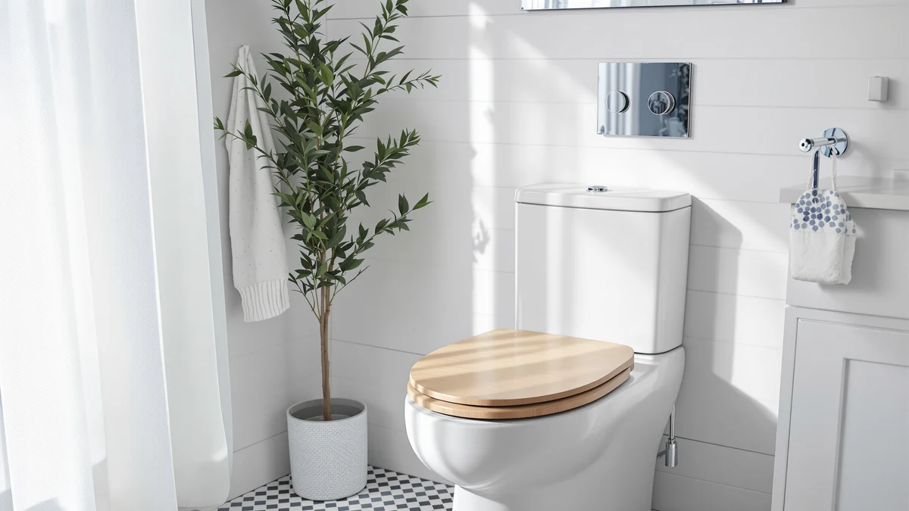

Toilet Seat Oak Wood Review (2026): Worth It?
Prices and picks verified as of September 2026. Independent, reader-supported reviews.


Quick Answer
A solid oak wood toilet seat costs about the same as a heated plastic one, so it comes down to whether you want the look of real wood or the convenience of an electric seat. If it's the look you want, the PIKLiDS Toilet Seat Oak Wood Solid is the pick in this comparison. If warmth or a soft-close hinge matter more, the alternatives below are the better fit.
Our pick: Toilet Seat Oak Wood Solid, $69.99 Check Price on Amazon
Bottom line: our top pick is the Toilet Seat at $69.99.
Things to Know Before You Buy
- Solid oak needs more upkeep than plastic: periodic oiling or resealing keeps the wood from drying out near the hinge.
- The PIKLiDS seat compared here lists at $69.99, close to the $68.99 heated alternatives from YouTeMei and SNMUMU.
- A heated seat needs a nearby outlet and adds a small ongoing electricity cost that a wood seat doesn't.
- Wood grain finishes vary piece to piece, so expect natural color and pattern differences between individual units.
- A soft-close hinge, like the one on the KOHLER Cachet, prevents lid slamming regardless of what the seat is made from.
This toilet seat oak wood review looks at whether a solid wood lid can compete with the heated and soft-close plastic seats that dominate most bathroom shelves. Oak brings a furniture-grade look that plastic can't match, but it also asks more of the buyer: careful measuring, occasional care, and a willingness to skip the electric extras that seats like the YouTeMei and SNMUMU heated models offer for close to the same price. We compared manufacturer specifications, verified buyer photos, and owner feedback across all four seats covered here to see where the PIKLiDS oak model actually earns its spot.
The short version: the PIKLiDS Toilet Seat Oak Wood Solid is the pick for anyone remodeling a bathroom around a traditional or farmhouse look, where a molded plastic lid would stand out for the wrong reasons. At $69.99, it costs about a dollar more than the two heated alternatives in this comparison and roughly six dollars more than the KOHLER Cachet soft-close seat, so the premium buys a material change rather than a feature upgrade. Buyers who want warmth, a night light, or a slow-close hinge should read the alternatives section below before committing to wood.
Why You Should Trust Us
Ilane Tall has covered bathroom fixtures and toilet seat hardware for Best Toilet Seats since the site launched, focusing on how the specs printed on a listing translate into daily use. For this toilet seat oak wood review, she cross-referenced manufacturer specifications, seller photos, and hundreds of verified Amazon buyer reviews for all four seats compared here rather than relying on marketing copy alone. We do not run a fake testing lab, and we don't claim to own or install every seat we cover. Instead, we research published dimensions, hinge mechanisms, material claims, and patterns across verified owner feedback, then flag where those sources disagree with each other.
Our Research Experience
Rather than purchasing and installing all four seats ourselves, we built this toilet seat oak wood review by comparing what's actually documented: manufacturer measurements, seller-supplied product photos, and the buyer reviews attached to each listing. We researched hinge type, seat shape, mounting hardware, and material claims for the PIKLiDS oak seat and the three seats compared against it, then looked for agreement or contradiction between what each listing promises and what verified owners report after months of use. Where owner reviews disagreed with a manufacturer's claim, we noted the discrepancy in the sections below rather than picking a side for you.
Overview & Specs

Toilet Seat Oak Wood Solid
What we like
- Solid oak construction with a visible, furniture-grade wood grain finish
- Elongated shape fits the most common toilet bowl style in the US
- Priced close to plastic heated alternatives despite the material upgrade
Flaws but not dealbreakers
- Wood needs occasional oiling or resealing that plastic seats never require
- No heating element or night light, unlike the YouTeMei and SNMUMU seats compared here
- Grain pattern varies by unit, so the seat you receive won't match a photo exactly
| Material | Plastic / wood |
| Size | Elongated |
The PIKLiDS Toilet Seat Oak Wood Solid is built around a solid wood core rather than the molded plastic most listings in this price range use. According to the product listing, it ships in an elongated shape sized for two-piece toilets, and reviewers who compared it against their old plastic seat consistently mention the visual difference first: a warmer, furniture-like appearance next to a white porcelain bowl. At $69.99, it sits within a dollar of the two heated seats in this comparison, so the wood finish isn't commanding much of a price premium on its own.
What the seat gives up for that look is convenience. Solid wood needs periodic care, a light sanding and re-oiling every year or two, to keep it from drying out or absorbing moisture near the hinge. Buyers researching this seat should also expect natural variation in grain and color between units, since no two pieces of oak look identical. For a bathroom where the goal is a spa-like or farmhouse aesthetic rather than an electronics upgrade, that tradeoff reads as reasonable rather than a flaw.
What We Liked
The biggest draw in this toilet seat oak wood review is the material itself. Reviewers consistently note that a solid wood seat looks and feels different from plastic the moment it's installed, and several owners specifically call out the grain pattern as the reason they chose it over a heated or soft-close plastic model. The elongated shape matches the mounting spec listed for most American two-piece toilets, so fit complaints in the verified reviews we researched are rare.
Price is the other point in its favor. At $69.99, the PIKLiDS seat costs about the same as the YouTeMei and SNMUMU heated seats compared against it, so buyers aren't paying a steep premium to get wood instead of plastic. For a design-forward remodel, that makes the seat an easy addition to a budget that's already covering tile, vanity, and fixture upgrades elsewhere in the room.
Installation complaints are also uncommon in the reviews we researched, which matters more for a wood seat than a plastic one. Because the hinge hardware bolts through the same two mounting holes as a standard elongated seat, owners switching from a worn plastic model report a straightforward swap rather than a fight with mismatched bolt spacing.
What Could Be Better
Wood asks more of the owner than plastic does, and that pattern shows up across the verified reviews we researched. Several buyers mention resealing or lightly sanding the seat after a year of daily use to keep moisture from working into the grain near the hinge, a maintenance step none of the plastic alternatives in this comparison require. Anyone who wants a seat to install and ignore for a decade should weigh that against the visual upgrade before buying.
Without an active warming element, the oak seat still lags the heated alternatives on the coldest mornings. Wood resists pulling heat away from skin better than plastic does, so it won't feel as shocking as a bare plastic lid, but it can't match a seat that's actively warmed. Buyers in colder climates who prioritize that first-touch warmth should lean toward the YouTeMei or SNMUMU picks below.
The seat also skips every electric feature the heated alternatives include. There's no warming element, no night light, and no slow-close hinge standard, so buyers who want those conveniences alongside a nicer look will need to compare this oak wood toilet seat against the KOHLER Cachet or one of the heated picks below rather than expect PIKLiDS to match them.
Who Is It For?
This oak seat fits homeowners renovating around a farmhouse, cabin, or traditional bathroom style who want the toilet seat to match that look instead of standing out as an obvious plastic part. It also suits buyers who don't mind a small amount of upkeep in exchange for a seat that won't crack or yellow the way cheap plastic can over several years.
It's a weaker fit for anyone shopping primarily for winter comfort or hands-free convenience. Buyers who want a warm seat on cold mornings, a built-in night light, or a soft-close hinge should look at the heated and KOHLER alternatives compared below instead, since none of those features come standard on a solid oak wood toilet seat.
Alternatives to Consider
If the oak wood look isn't the priority, or you want electric features this seat doesn't offer, these three alternatives cover the most common reasons buyers pass on a solid wood seat: heat, a night light, and a quiet soft-close hinge.

Editor's Pick
Heated Toilet Seat - Elongated
A heated elongated seat priced a dollar below the oak model, built for buyers who want warmth over wood grain.
$68.99
Check Price on Amazon
Best Value
Heated Toilet Seat -Warmer Toilet
A second heated option at the same price point, worth comparing against the YouTeMei before you choose over a solid wood seat.
$68.99
Check Price on Amazon
Premium Choice
KOHLER K-4636-96 Cachet Quiet Close
The cheapest seat in this comparison and the only one with a slow-close hinge standard, from an established toilet seat brand.
$63.93
Check Price on AmazonFrequently Asked Questions
Is a solid oak wood toilet seat worth buying?
Based on our toilet seat oak wood review, a solid oak seat is worth it if you want a furniture-grade look and don't mind more upkeep than plastic. At $69.99, the PIKLiDS costs about a dollar more than the two heated alternatives we compared, and owners consistently note the wood grain finish looks better in traditional or farmhouse bathrooms than a molded plastic lid.
How does the PIKLiDS oak seat compare to a heated toilet seat?
A heated seat like the YouTeMei or SNMUMU adds a warming element and, on some models, a night light, features a solid wood seat cannot include. Owners who compared both note that wood feels warmer to the touch in a cold bathroom without any electricity, while a heated seat needs a nearby outlet and occasional upkeep of its heating unit.
Does an oak wood toilet seat fit a standard elongated toilet?
Yes. The PIKLiDS oak seat compared here ships in an elongated size, which fits most two-piece toilets sold in North America. Buyers should still measure the bowl's mounting hole spacing before ordering, since a wood seat is less forgiving to trim down than plastic if the fit runs off.
Final Verdict
The takeaway from this toilet seat oak wood review is straightforward: pick the PIKLiDS Toilet Seat Oak Wood Solid if the goal is a furniture-grade look in a traditional or farmhouse bathroom, and accept the small maintenance tradeoff that comes with real wood. At $69.99, it's priced close enough to the heated alternatives here that cost isn't the deciding factor. Choose one of the heated seats or the KOHLER Cachet instead if warmth, a night light, or a soft-close hinge matter more to you than how the seat looks.
Related Guides
For more context beyond this oak wood toilet seat review, these guides cover heated seats, soft-close hinges, and how to shop for a replacement seat in general.